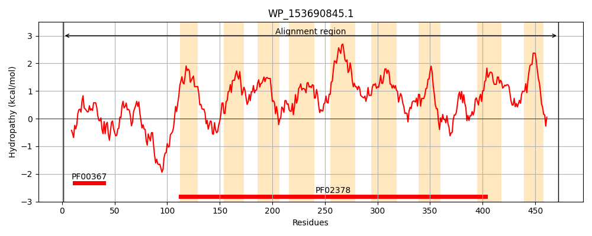
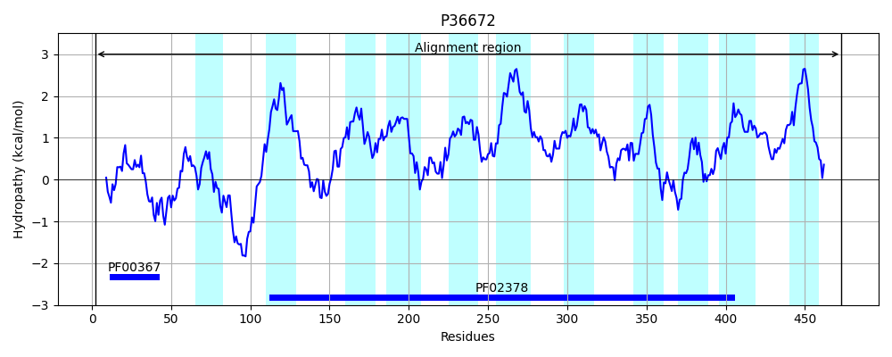
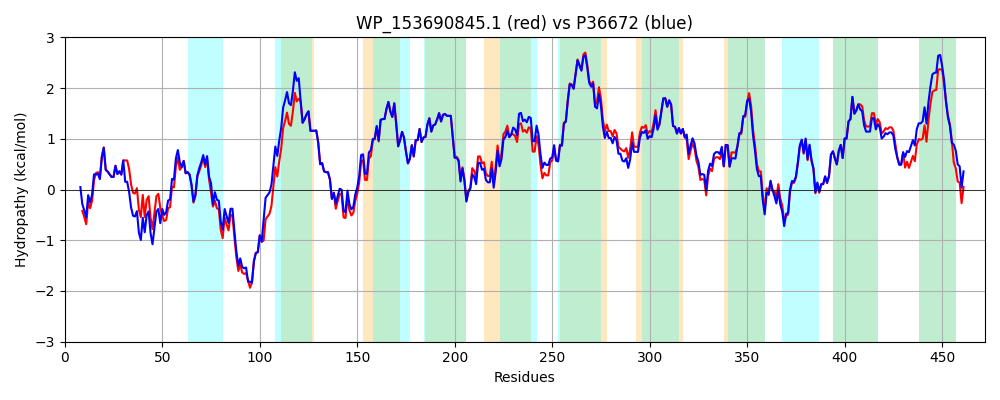

Hit Accession: P36672
Hit TCID: 4.A.1.2.4
Hit Description: gnl|BL_ORD_ID|10068 gnl|TC-DB|P36672|4.A.1.2.4 PTS SYSTEM, TREHALOSE-SPECIFIC IIBC COMPONENT (EIIBC-TRE) (TREHALOSE- PERMEASE IIBC COMPONENT) (PHOSPHOTRANSFERASE ENZYME II, BC COMPONENT) (EC 2.7.1.69) (EII-TRE) - Escherichia coli.
Mach Len: 472
e:0.000000
Query TMS Count : 9
Hit TMS Count: 11
TMS-Overlap Score: 8.850000
Predicted Substrates:CHEBI:10202;alpha,alpha-trehalose
BLAST Alignment:
Score: 2214 , Bit scores: 857 bits, E-value: 0.0e+00, Alignment length: 472, Percentage identity: 89
Query: 1 MSKVNQQDIDKLIELVGGRGNIATVSHCITRLRFVLNDPAIAKPKEIEQLRMVKGCFTNAGQFQVVIGTEVGDYYKALLATTGQTSANKEQVKQAARQNMKWHEQLISHFAEIFFPLLPALISGGLILGFRNVIGDLPMSNGQTLAQMHPSLKTIYDFLWLIGEAIFFYLPVGICWSAVKKMGGTPILGIVLGVTLVSPQLMNAYLLGQQVPEVWNFGLFTIAKVGYQAQVIPALLAGLTLGFIETRLKRIVPDYLYLVIVPVCSLILAVFLAHAIIGPFGRLIGDGVAFAVRHLLTGSFAPIGAALFGFLYAPLVITGVHQTTLAIDMQMIQSMGGTPVWPLIALSNIAQASAAVGIIIASRKQNEREISVPAAISAYLGVTEPAMYGINLKYRFPMLCAMIGSGLAGLLCGLNGVLANGIGVGGLPGILSIQPTYWQVYAMAMAIAVVVPIILTTVVYQRKYRQGTLQIV 472
MSK+NQ DID+LIELVGGRGNIATVSHCITRLRFVLN PA A+PKEIEQL MVKGCFTNAGQFQVVIGT VGDYY+AL+A+TGQ +KEQVK+AAR NMKWHEQLISHFA IFFPLLPALISGGLILGFRNVIGDLPMSNGQTLAQM+PSL+TIYDFLWLIGEAIFFYLPVGICWSAVKKMGGTPILGIVLGVTLVSPQLMNAYLLGQQ+PEVW+FG+F+IAKVGYQAQVIPALLAGL LG IETRLKRIVPDYLYLV+VPVCSLILAVFLAHA+IGPFGR+IGDGVAFAVRHL+TGSFAPIGAALFGFLYAPLVITGVHQTTLAID+QMIQSMGGTPVWPLIALSNIAQ SA +GIII+SRK NEREISVPAAISA+LGVTEPAMYGINLKYRFPMLCAMIGSGLAGLLCGLNGV+ANGIGVGGLPGILSIQP+YWQV+A+AMAIA+++PI+LT+ +YQRKYR GTL IV
Sbjct: 2 MSKINQTDIDRLIELVGGRGNIATVSHCITRLRFVLNQPANARPKEIEQLPMVKGCFTNAGQFQVVIGTNVGDYYQALIASTGQAQVDKEQVKKAARHNMKWHEQLISHFAVIFFPLLPALISGGLILGFRNVIGDLPMSNGQTLAQMYPSLQTIYDFLWLIGEAIFFYLPVGICWSAVKKMGGTPILGIVLGVTLVSPQLMNAYLLGQQLPEVWDFGMFSIAKVGYQAQVIPALLAGLALGVIETRLKRIVPDYLYLVVVPVCSLILAVFLAHALIGPFGRMIGDGVAFAVRHLMTGSFAPIGAALFGFLYAPLVITGVHQTTLAIDLQMIQSMGGTPVWPLIALSNIAQGSAVIGIIISSRKHNEREISVPAAISAWLGVTEPAMYGINLKYRFPMLCAMIGSGLAGLLCGLNGVMANGIGVGGLPGILSIQPSYWQVFALAMAIAIIIPIVLTSFIYQRKYRLGTLDIV 473 | Protein Hydropathy Plots: |
|---|
|  |  |
Pairwise Alignment-Hydropathy Plot:
|
|---|
|  |